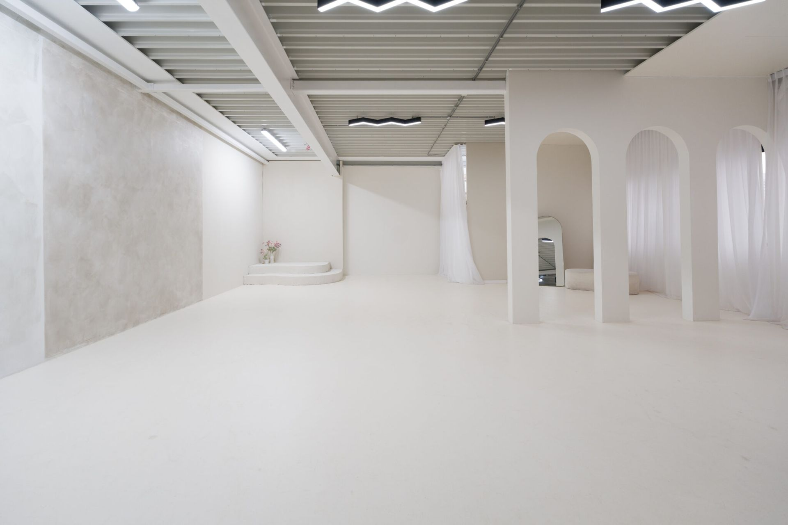

Social media marketing agency with its own photo studio
We make sure your business gets seen.
KIJK62 takes your social media completely off your hands. We shoot the photos and videos in our own studio, write the copy, build your LinkedIn and post on all your channels. You approve, and get on with what you do best.
- Own photo studio in Poeldijk
- Copy in your voice
- One point of contact for every channel
KIJK62 in short
KIJK62 is a social media marketing agency based in Poeldijk (Westland), right next to The Hague, with its own photo studio. We help businesses grow their online visibility by taking over complete social media management: strategy, photography and video, copywriting, LinkedIn, scheduling, posting, replying and monthly reporting. Click a channel to see what we do there.
Services
Everything for your social media, under one roof
No need to hire a photographer, copywriter and social media manager separately. At KIJK62 it's one team with one plan.
Social media management
We plan, post, reply and report. You approve in one overview.
Read moreContent & photography
Your own visuals instead of stock photos, shot in our studio or at your location.
Read moreLinkedIn marketing
A company page and a personal profile that customers and candidates click on.
Read moreCopy that sounds like you
Captions, posts and articles in your company's voice.
Read moreReels & short video
Short videos that stand out in the feed, with subtitles.
Read moreWebsite design
A professional custom website, found by Google and AI search engines.
Read moreROI calculator
What does it return?
Move the sliders with your own numbers. You'll see right away how many new customers you need and when you've earned back the investment.
Return of – against an investment of – over 12 months.
An example based on your own assumptions, not a guarantee. Social media takes time to build: we count month 1 without new customers and ramp up to your full scenario over four months.

Own photo studio
No stock photos. Your people, your products.
People scroll past images they've seen a hundred times. That's why we create your content ourselves, in our studio in Poeldijk or on location.
- One studio day, weeks of postsWe plan the shoot around your content calendar, so every image has a place.
- Always the right formatEvery image cropped for feed, reels, stories and LinkedIn.
- Portraits for your teamFor LinkedIn, your website and your job ads.
How we work
How we take it off your hands
Six steps, two of which you do yourself. We handle the rest.
- You + KIJK62
Intro call
We discuss your business, your customers and what social media should deliver. Free, no obligation.
- KIJK62
Strategy & content plan
We choose the channels, tone and topics, and put the first month into a content calendar.
- KIJK62
Studio day
We shoot photo and video in our Poeldijk studio or at your location. Everything for the weeks ahead.
- KIJK62
Writing & scheduling
We write the copy, pick the visuals and schedule everything for the best moment.
- You
Approve
You see every post in advance in one overview. Approve or request a change? One click.
- KIJK62
Post, reply, report
We post, reply to messages and send you a monthly report on what worked.
Who we work for
For businesses with a good story and too little time
We work with SMEs that know social media matters but don't get round to it themselves.
Construction & installation
Showing projects and craftsmanship, and finding staff.
Horticulture & trade
Growers, traders and suppliers who want to show their product.
Professional services
Consulting, accounting and legal: building trust on LinkedIn.
Hospitality & retail
Dishes, products and offers that bring people in.
Beauty & wellness
Salons and studios that want a full diary.
Health & care
Practices showing who works behind the door.
Employers
Companies looking for new colleagues through social media.
Start-ups
A professional look from day one.
From Poeldijk, active inWestlandThe HagueNaaldwijkMonsterWateringenDe LierRijswijkDelftZoetermeerRotterdamall of the Netherlands
Questions
Outsourcing social media: how does it work?
Can't find your question? Call or email us and we'll explain.
What does a social media marketing agency like KIJK62 do?
KIJK62 takes your social media off your hands completely. Together we set the goals, then we shoot photos and video in our own studio in Poeldijk, write the copy, schedule and post on every channel, reply to messages and send you a monthly report.
What does outsourcing social media deliver?
Two things: time and customers. You get back the hours you now spend on social media yourself, and you build visibility with customers and candidates. Our ROI calculator shows how many new customers per month you need to earn back the investment.
Which channels do you post on?
LinkedIn, Instagram, Facebook, TikTok, YouTube Shorts and your Google Business Profile. Together we choose the channels where your customers actually are.
How much of my time does it take?
After the intro call and the studio day, mostly a few minutes a week: you approve the scheduled posts in one overview. We do the rest.
Why is having our own photo studio an advantage?
You get your own visuals instead of stock photos. In one studio day we create visuals for weeks of posts, in the right format for every channel.
Do you only work in Westland?
No. The studio is in Poeldijk, so we work a lot with businesses in Westland, The Hague, Delft, Rijswijk and Zoetermeer. We manage social media for businesses across the Netherlands, in Dutch and English.
Ready to get seen?
Book a free intro call. We'll look at your business, your customers and what social media can do for you. No strings attached.